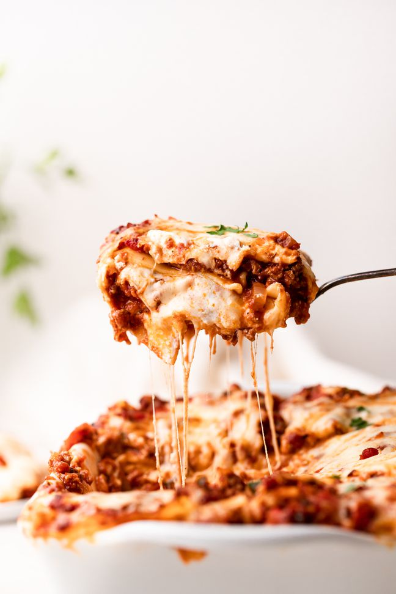

Lasagna

Description
This classic lasagna is made with an easy meat sauce as the base. Layer the sauce with noodles and cheese, then bake until bubbly! This is great for feeding a big family, and freezes well, too.
Ingredients
- 2 teaspoons extra virgin olive oil
- 1 pound ground beef chuck
- 1/2 medium onion, diced (about 3/4 cup)
Steps
- Put a large pot of salted water (1 Tbsp salt for every 2 quarts of water) on the stovetop on high heat. It can take a while for a large pot of water to come to a boil (this will be your pasta water), so prepare the sauce in the next steps while the water is heating.
- In a large skillet heat 2 teaspoons of olive oil on medium high heat. Add the ground beef and cook until it is lightly browned on all sides.
Back to recipes